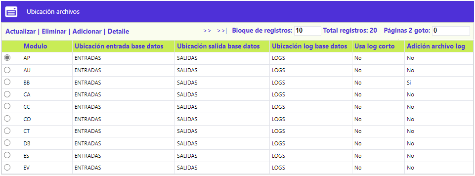
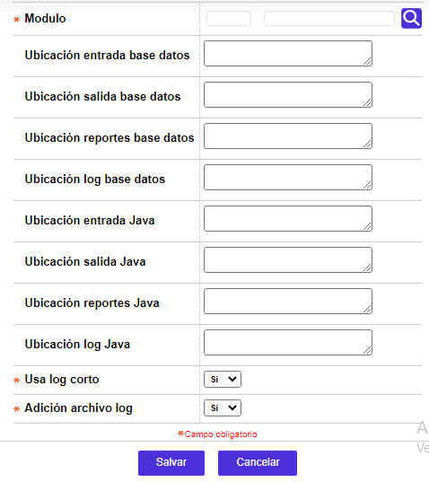
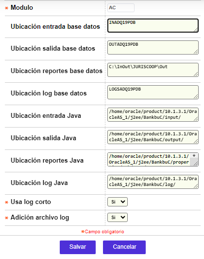
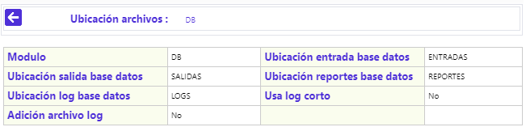

Ubicación de archivos
Desde este formulario, se habilita la consulta y mantenimiento de la tabla que contiene la información de la ruta o localización de los distintos archivos de entrada principalmente los cargues, los de salida e incluso los del log (auditoria) asociados a cada uno de los diferentes roles del aplicativo.

El formulario contiene las opciones Actualizar, Eliminar, Adicionar y Detalle.
Adicionar: Si el usuario invoca la opción Adicionar se despliega un nuevo formulario

Descripción de campos
Módulo |
Campo alfanumérico, obligatorio, en el que se registra la abreviatura del módulo para el cual se va a definir la ubicación de archivos. |
Ubicación entrada base datos |
Campo alfanumérico de 250 dígitos, no obligatorio, en el que se registra la dirección o ruta de los archivos externos que alimentan al sistema. |
Ubicación salida base datos |
En este campo alfanumérico de 250 dígitos, no obligatorio, se registra la dirección o ruta en la que se sitúan los diversos archivos que genera el sistema y requeridos por los entes externos. |
Ubicación reportes base datos |
Campo alfanumérico de 250 dígitos, no obligatorio, en el que se registra la dirección o ruta en la que se sitúan los diversos archivos en los que se guardan los reportes que genera el sistema. |
Ubicación log base datos |
En este campo alfanumérico de 250 dígitos, no obligatorio, se registra la dirección o ruta en la cual se guardan los archivos log de auditoria generados. |
Usa log corto |
Campo obligatorio tipo combo con las opciones Si o No. Cuando está marcado Si, el sistema genera un log muy breve, y si el valor es No se genera un log detallado, acorde a las necesidades o políticas definidas por la entidad. |
Adición archivo log |
En este campo tipo combo, obligatorio, la entidad puede establecer si el log es actualizado cada vez que se carga o genera un archivo o si se acumulan de manera consecutiva. |
Actualizar: Si el usuario selecciona un registro e invoca la opción Actualizar se despliega un formulario en el cual el único campo NO modificable es el Módulo.

Detalle: si el usuario selecciona un registro e invoca la opción Detalle se despliega un formulario con toda la información del registro y en el cual ninguno de sus campos es modificable .
